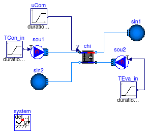
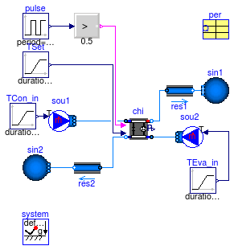

Collection of models that illustrate model use and test models
This package contains examples for the use of models that can be found in Buildings.Fluid.Chillers.
Extends from Modelica.Icons.ExamplesPackage (Icon for packages containing runnable examples).
| Name | Description |
|---|---|
| Test model for chiller based on Carnot efficiency | |
| Test model for chiller electric EIR | |
| Test model for chiller electric reformulated EIR | |
| BaseClasses | Package with base classes for Buildings.Fluid.Chillers.Examples |
 Buildings.Fluid.Chillers.Examples.Carnot
Buildings.Fluid.Chillers.Examples.Carnot
Test model for chiller based on Carnot efficiency

Example that simulates a chiller whose efficiency is scaled based on the Carnot cycle.
Extends from Modelica.Icons.Example (Icon for runnable examples).
| Type | Name | Default | Description |
|---|---|---|---|
| Power | P_nominal | 10E3 | Nominal compressor power (at y=1) [W] |
| TemperatureDifference | dTEva_nominal | 10 | Temperature difference evaporator inlet-outlet [K] |
| TemperatureDifference | dTCon_nominal | 10 | Temperature difference condenser outlet-inlet [K] |
| Real | COPc_nominal | 3 | Chiller COP |
| MassFlowRate | m2_flow_nominal | P_nominal*COPc_nominal/dTEva... | Nominal mass flow rate at chilled water side [kg/s] |
| MassFlowRate | m1_flow_nominal | m2_flow_nominal*(COPc_nomina... | Nominal mass flow rate at condenser water wide [kg/s] |
Buildings.Fluid.Chillers.Examples.ElectricEIR
Test model for chiller electric EIR

Example that simulates a chiller whose efficiency is computed based on the condenser entering and evaporator leaving fluid temperature. A bicubic polynomial is used to compute the chiller part load performance.
Extends from Modelica.Icons.Example (Icon for runnable examples), Buildings.Fluid.Chillers.Examples.BaseClasses.PartialElectric (Base class for test model of chiller electric EIR).
| Type | Name | Default | Description |
|---|---|---|---|
| Power | P_nominal | -per.QEva_flow_nominal/per.C... | Nominal compressor power (at y=1) [W] |
| TemperatureDifference | dTEva_nominal | 10 | Temperature difference evaporator inlet-outlet [K] |
| TemperatureDifference | dTCon_nominal | 10 | Temperature difference condenser outlet-inlet [K] |
| Real | COPc_nominal | 3 | Chiller COP |
| MassFlowRate | mEva_flow_nominal | per.mEva_flow_nominal | Nominal mass flow rate at evaporator [kg/s] |
| MassFlowRate | mCon_flow_nominal | per.mCon_flow_nominal | Nominal mass flow rate at condenser [kg/s] |
| ElectricEIRChiller_McQuay_WSC_471kW_5_89COP_Vanes | per | Chiller performance data |
Buildings.Fluid.Chillers.Examples.ElectricReformulatedEIR
Test model for chiller electric reformulated EIR

Example that simulates a chiller whose efficiency is computed based on the condenser leaving and evaporator leaving fluid temperature. A bicubic polynomial is used to compute the chiller part load performance.
Extends from Modelica.Icons.Example (Icon for runnable examples), Buildings.Fluid.Chillers.Examples.BaseClasses.PartialElectric (Base class for test model of chiller electric EIR).
| Type | Name | Default | Description |
|---|---|---|---|
| Power | P_nominal | -per.QEva_flow_nominal/per.C... | Nominal compressor power (at y=1) [W] |
| TemperatureDifference | dTEva_nominal | 10 | Temperature difference evaporator inlet-outlet [K] |
| TemperatureDifference | dTCon_nominal | 10 | Temperature difference condenser outlet-inlet [K] |
| Real | COPc_nominal | 3 | Chiller COP |
| MassFlowRate | mEva_flow_nominal | per.mEva_flow_nominal | Nominal mass flow rate at evaporator [kg/s] |
| MassFlowRate | mCon_flow_nominal | per.mCon_flow_nominal | Nominal mass flow rate at condenser [kg/s] |
| ReformEIRChiller_McQuay_WSC_471kW_5_89COP_Vanes | per | Chiller performance data |